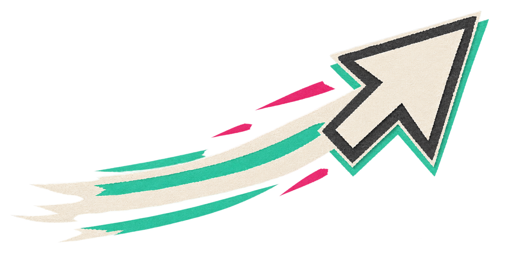

КОД-РЕВЬЮ, ВТОРНИК, 17:40
// dedup ids after offline sync
- std::sort(ids.begin(), ids.end());
- ids.erase(std::unique(ids.begin(), ids.end()), ids.end());
+ std::unordered_set<uint64_t> s(ids.begin(), ids.end());
+ ids.assign(s.begin(), s.end());
Коллега: «Линейно вместо n log n»
Approve ✓

Мозг ещё читает. Рука уже согласна.